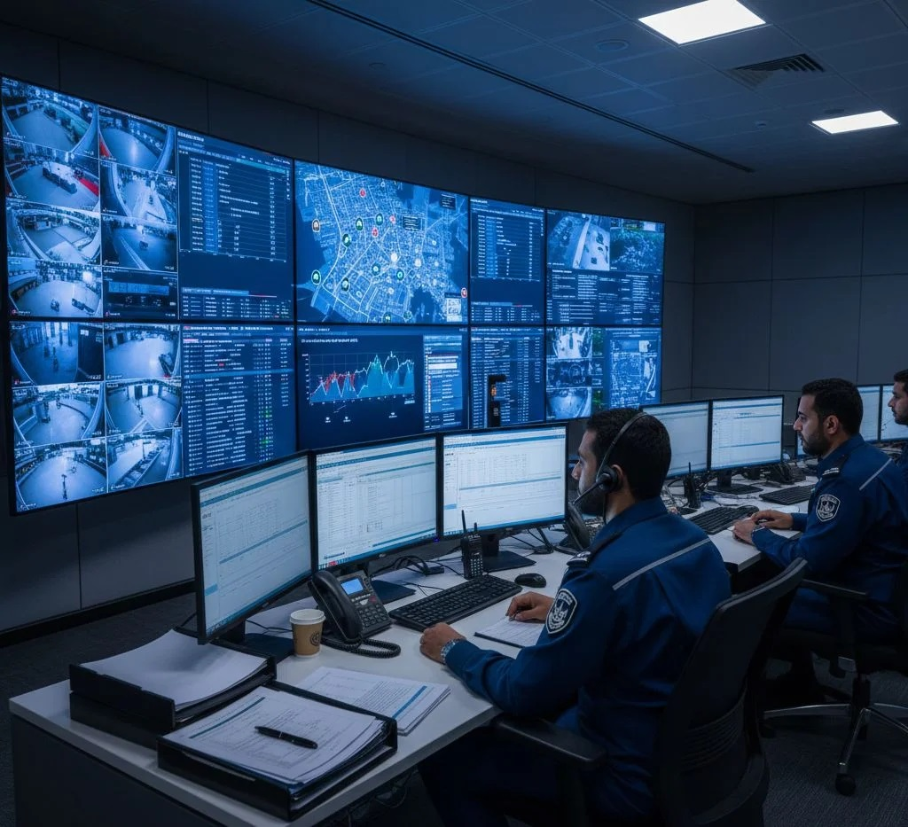

في Morgan Group International، نؤمن بأن الأمن يمثل الركيزة الأساسية لاستقرار الأعمال وحماية الأصول وضمان استمرارية النجاح، ولذلك نولي قطاع الأمن والحراسات الخاصة اهتماماً بالغاً باعتباره أحد القطاعات الحيوية التي تسهم في توفير بيئة آمنة ومستقرة للأفراد والمؤسسات على حد سواء. وانطلاقاً من هذا المفهوم، تقدم المجموعة حلولاً أمنية متكاملة تعتمد على أحدث الأساليب والتقنيات الحديثة في مجال الحماية والتأمين، من خلال فرق عمل مؤهلة ومدربة وفق أعلى المعايير المهنية، تمتلك الخبرة والكفاءة والجاهزية للتعامل مع مختلف المواقف والظروف الأمنية بكفاءة واحترافية عالية. كما يتم إعداد الكوادر الأمنية من خلال برامج تدريبية متخصصة تشمل مهارات الحماية والمراقبة وإدارة الأزمات والتعامل مع الحالات الطارئة، بما يضمن تقديم خدمات أمنية تتسم بالموثوقية والانضباط والفعالية. وتوفر المجموعة خدماتها لمختلف القطاعات والمنشآت، بما في ذلك المجمعات السكنية والمراكز التجارية والمشروعات الاستثمارية والمقار الإدارية والمنشآت الصناعية والخدمية، مع تصميم خطط أمنية تتناسب مع طبيعة كل موقع واحتياجاته التشغيلية، لضمان أعلى مستويات الحماية والسلامة. كما تحرص Morgan Group International على دمج العنصر البشري المؤهل مع أحدث أنظمة المراقبة والتحكم والتقنيات الأمنية المتطورة، بما يعزز من كفاءة الأداء وسرعة الاستجابة ويحد من المخاطر المحتملة. وتستند جميع خدماتنا إلى مبادئ الانضباط والسرية والالتزام المهني، بما يرسخ الثقة بيننا وبين عملائنا ويجعلنا شريكاً موثوقاً في توفير حلول أمنية متكاملة تواكب متطلبات العصر وتلبي أعلى معايير الجودة والتميز. ومن خلال رؤيتها المستقبلية الطموحة، تسعى المجموعة إلى ترسيخ مكانتها كإحدى الشركات الرائدة في قطاع الأمن والحراسات الخاصة، عبر التوسع المستمر وتطوير منظومة الخدمات الأمنية وتبني أحدث الممارسات العالمية، بما يضمن توفير بيئة آمنة تدعم نجاح الأعمال وتحافظ على الأرواح والممتلكات وتحقق أعلى مستويات الأمان والاستقرار.
